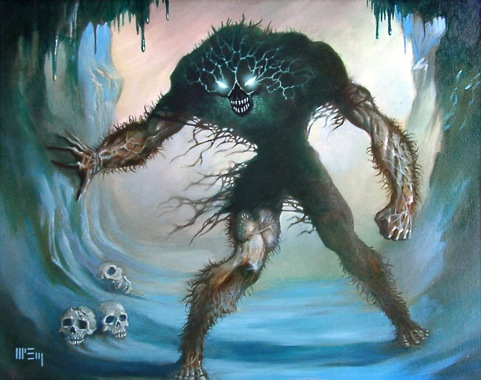

Индейцы, испокон веков живущие в северных краях, знают о стихиях то, чего не дано знать ни одному белому человеку. Лишь по тайным, тщательно скрываемым каналам доходят до нас сведения о пришельцах из иных миров, что управляют природой на Земле.
Одно из таких существ — Итакуа, Повелитель Белого Безмолвия, бог, у которого нет тотемов, Он правит снегом и льдом, но увидеть его способны только те, кто ему поклоняется. Северные Жители, пытаясь задобрить, Итакуа, приносят в жертву собственных детей — ибо знают, что гнев Снежной твари Может обернуться еще более ужасной карой. Всякий же чужак, кому не посчастливится его встретить, — Умрет в муках от невыносимого холода.
Из-за исполинских размеров и вечно сопровождающих его вихрей не каждый-то и определит, что перед ним — сам Итакуа. Создание людской формы со светящимися глазами и перепончатыми лапами, он проступает сквозь кружащийся снег, и в этот миг увидевший его успевает лишь осознать неминуемость своей смерти.
Однако Шагающий по ветру не всегда жалует своих жертв сиюминутным убийством. Нередко он уносит их души сквозь множество стран и миров, чтобы положить к ногам своего повелителя — Хастура Невыразимого, которому верно служит наряду с иными божествами своего ранга.
Сам же Итакуа повелевает расами более низкими, которые поклоняются ему на своих планетах, подобно людям стылых краев Земли. Ибо все твари, которым ведома губительная сила холода и которые не желают испытать на себе нестерпимых мук, трепещут в страхе перед Повелителем Белого Безмолвия. Единственное спасение — это преклониться перед Итакуа и таким образом обрести защиту от ледяной стихии.
Впервые Итакуа появляется в одноименном рассказе Августа Дерлета (Ithaqua, 1941), вдохновленного, в свою очередь, более ранними высоко оцененным самим Лавкрафтом «Вендиго» (The Wendigo, 1910) Элджернона Блэквуда.
